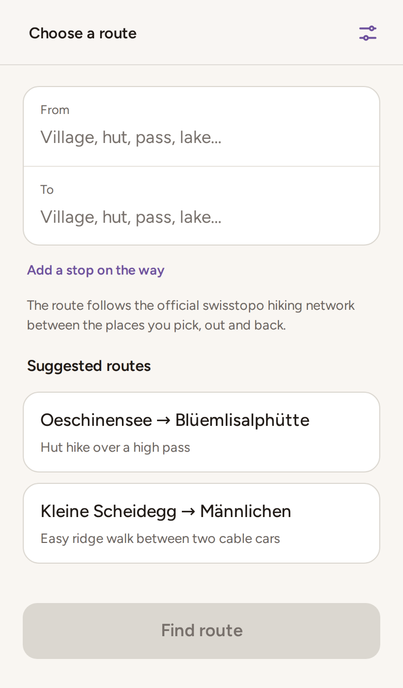
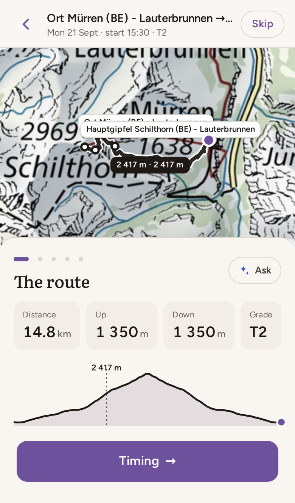
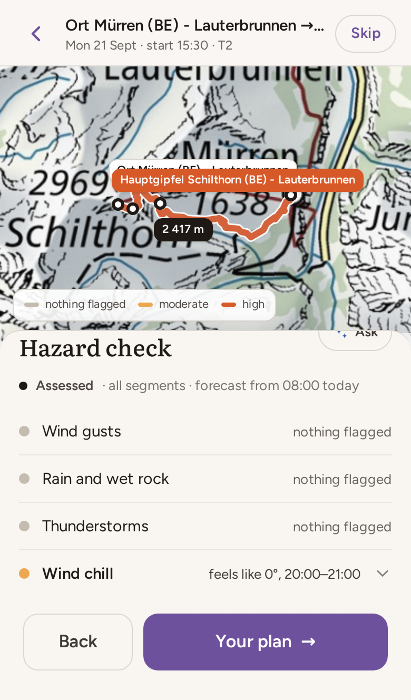
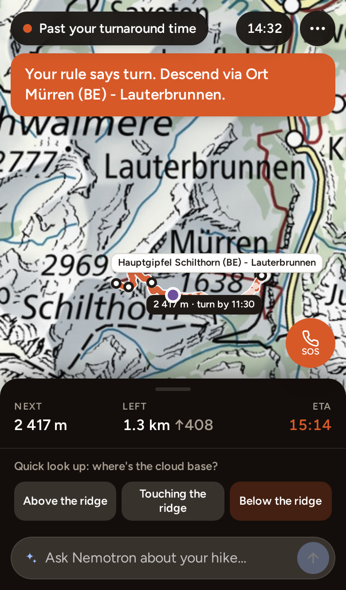
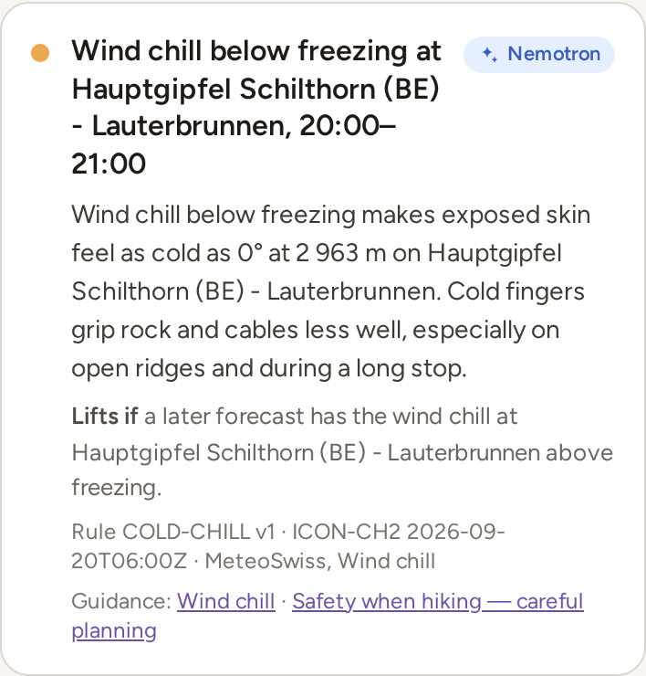
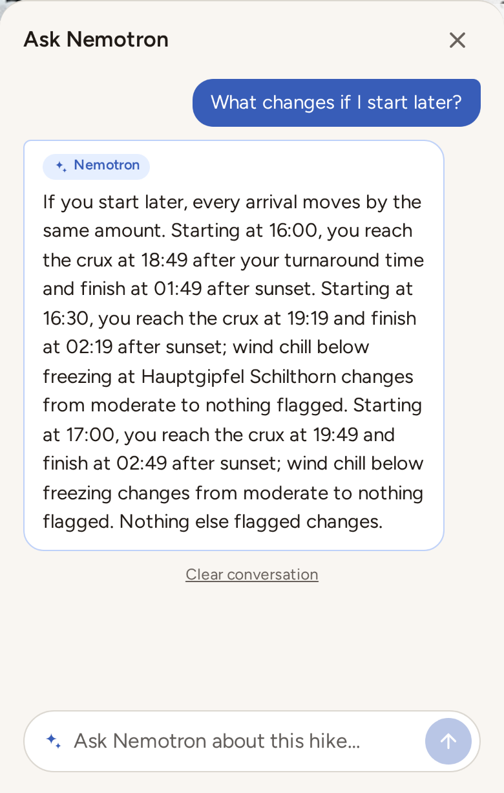
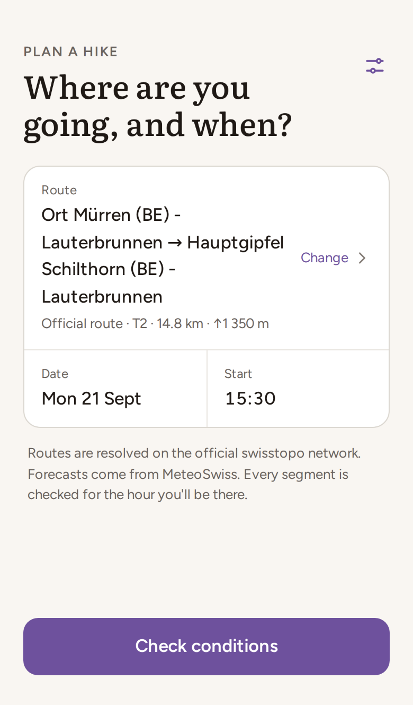
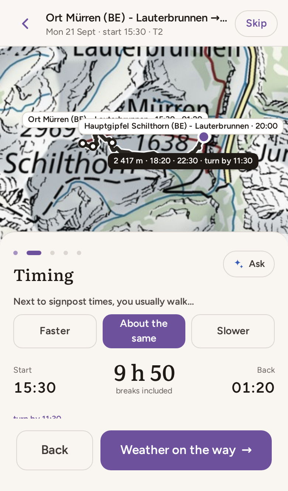
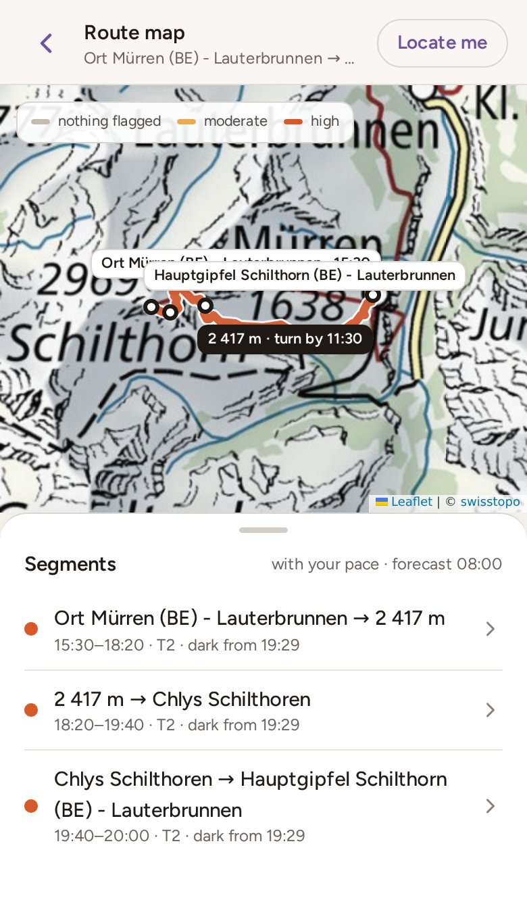

Swiss {ai} Weeks hackathon · September 2026
A safety briefing for a Swiss mountain hike: the official trail network, the MeteoSwiss forecast for the hours you will actually be up there, and a rules engine that says where the day gets hard — and where it could not tell.
The rules engine decides every hazard. The language model grounds, phrases and explains those decisions. It never makes one.
And there is deliberately no green: the app says nothing flagged, moderate, high, or not evaluated. A section it could not check is never shown as safe.
You pick two places. The backend routes between them over swisstopo's official hiking network, names the stops after the passes, huts and lakes they really are, and works out when you reach each one at your pace. It then pulls the MeteoSwiss ICON forecast at those points, for those hours, runs seven hazard rules over it, and tells the story in five steps over one map.
On the trail it switches to a dark, map-first field mode that holds you to one rule: turn around at this place by this time. You can ask a language model about any of it, at the briefing or on the ridge.
Live at hiking-safety.tail685478.ts.net. Every screenshot in this document was taken from that deployment by a script, against the real forecast; every threshold was read out of the running code.




Architecture
A React frontend, a FastAPI backend, and a hard line inside the backend between code that decides things and code that talks to the world.
/api and /mcp cannot drift apart — they call the same functions in the same process.
| Frontend | React 19, TypeScript, Vite, Tailwind v4, Leaflet, TanStack Query, Zustand |
| Backend | Python 3.13, FastAPI, httpx, shapely, networkx, managed with uv |
| Model | NVIDIA Nemotron on a local vLLM server, OpenAI-compatible |
| Data | SQLite for the trail graph; a JSON disk cache for everything fetched |
| Deploy | One systemd unit serving API, frontend and /mcp, published over HTTPS by Tailscale Funnel |
Severity is resolved in the browser. The server sends, per stop, the hours at which each hazard holds. The client looks up the hour you arrive. Moving your start time re-colours the whole route with no request at all — and, as page 5 shows, it can change what is flagged.
The wire format is generated, not maintained. The backend's Pydantic models are the contract; the OpenAPI schema is committed and the frontend's types are asserted against it, so renaming a field fails both the Python tests and the TypeScript build rather than surfacing as an empty card.
Data
Nothing on a computed route is hand-written — not the line, not the grade, not the distance, not the walking time. Each source decides one thing, and each can fail on its own.
| Source | What it decides |
|---|---|
| swissTLM3D Wanderwege imported once, 59k edges |
The trail itself, and the official class that floors the grade: Wanderweg → T1, Bergwanderweg → T2, Alpinwanderweg → T4. |
| swissALTI3D profile.json, live |
Elevation resampled along the chosen line, and so ascent, descent and per-leg climb. |
| swissNAMES3D live |
The names the stops are called after — passes, huts, lakes — so the timeline reads in places, not coordinates. |
| OpenStreetMap Overpass, live |
Refines the grade inside its official class via sac_scale, and the cables flag via safety_rope, ladder, via_ferrata_scale. It can raise a grade, never lower it. |
| MeteoSwiss ICON CH1 1 km / CH2 out to 5 days |
Temperature, wind, gusts, precipitation, freezing level, snow line, cloud base and CAPE at each stop, each hour. The finest model that covers the whole day is used, so one briefing never mixes models between hours. |
| Open-Meteo ensemble live |
How much the members disagree, and the thunderstorm probability. Wide disagreement on an exposed stop makes the engine decline to evaluate it rather than guess. |
| MeteoSwiss warnings app API, opt-in |
Raises the severity floor for the hours a warning covers. MeteoSwiss publishes no warnings as open data, so this is the undocumented app endpoint and is always labelled unofficial. |
Every legMinutes is the SAC / DIN 33466 estimate that Swiss signposts quote: 4 km/h on the flat,
400 m/h up, 800 m/h down, the larger effort counted in full and the smaller halved, then multiplied by a factor for
the grade (and 1.05 again where there are cables). Dijkstra weights the graph by that, not by distance, so
the routing itself prefers the line a person would choose. Your own answer to "next to signpost times, you usually
walk…" scales it again: 0.85 faster, 1.25 slower.
The hazard engine
The engine takes a route, a forecast per stop per hour, and any warnings. It returns, per hazard and per stop, the hours at which that hazard is moderate or high — plus the things it could not check.
| Hazard | Rule | Moderate | High |
|---|---|---|---|
| Gusts | WIND-EXP v1 | 40 km/h exposed · 60 km/h open | 55 km/h exposed · 80 km/h open |
| Showers | PRECIP-WET v1 | 0.5 mm/h, and only from T3 | 2 mm/h on T4, or on cables |
| Thunder | THUNDER v1 | 30% of members | 60%, or 30% above 2 000 m / exposed |
| Cold | COLD-CHILL v1 | wind chill ≤ 0 °C | wind chill ≤ −10 °C |
| Snow | SNOW-LEVEL v1 | freezing level at or below the stop | snow line below it, and falling |
| Visibility | CLOUD-BASE v1 | cloud base below the stop, from T3 | the same from T4 |
| Daylight | DAYLIGHT v1 | 45 min before sunset, and before sunrise | after sunset |
The thresholds follow SAC and MeteoSwiss guidance. They are a decision-support calibration, not a law of physics, which is why they live in one file with a version on each rule: change a number, bump the version, and the card says which version judged it.
Worked example · captured live on 20 September 2026
Mürren to the Schilthorn and back — T2, 14.8 km, 1 350 m of ascent — planned for Monday 21 September.
| The stop | Hauptgipfel Schilthorn, 2 963 m — the last of four stops out, reached 4 h 32 after the start at signpost pace |
| The forecast there | ICON-CH2, run of 20 Sept 06:00 UTC. At 20:00–21:00: gusts 26 km/h, precipitation 0 mm, wind chill 0 °C |
| The rule | COLD-CHILL v1: wind chill ≤ 0 °C is moderate, ≤ −10 °C is high |
| The verdict | moderate, 20:00–21:00, at that stop only |
| On the card | Rule COLD-CHILL v1 · ICON-CH2 2026-09-20T06:00Z · MeteoSwiss, Wind chill |
Every figure on that card came from the engine. The sentence around them was written by Nemotron, from the retrieved MeteoSwiss passage on wind chill, and then checked: a generated body that contains a digit, or a placeholder this hazard cannot fill, or any wording that sounds like a verdict, is dropped and the card falls back to its template.

The card as the hiker sees it, on the live app. Lifts if is computed, not written: the condition under which this particular hazard would go away.
The engine never asks when you are walking: it reports what is true at each stop, each hour. The browser looks up the hour you arrive. Below, the same route and the same intervals, resolved against two start times.
The whole app
The AI layer
Nemotron, on a vLLM server beside the app, does three jobs. Each is wrapped so that the worst case is plainer language, never a different verdict.
Grounding, with no model at all. Eighteen short passages — the SAC hiking scale, SAC and Suisse Rando safety advice, MeteoSwiss on wind chill and thunderstorms — are retrieved by BM25, boosted by each passage's hazard-kind and grade tags. The best match is appended to the hazard's provenance, and all of them come back as links: this is what makes a card say MeteoSwiss, Wind chill.
Narration. One request covers every hazard, per language. The model may quote a figure only as a named placeholder, which the client fills from the engine's numbers — so a narrated sentence may contain no digit at all until the app puts one there.
Questions. The server writes the hike out as prose in which every figure is a placeholder with its value and unit, adds where you are if you are walking, and asks the question against that. A number not in the briefing is rejected; an emergency is answered with the app's own sentence, starting with 1414 (Rega).
Anything a model wrote wears a Nemotron badge, in its own colour — which is neither a severity colour nor the action colour. The hiker can always see which words are the app's and which are the model's.
An MCP server exposes seven tools — search_places, create_route,
forecast_at, assess_route, ask_about_route and two more — over stdio or
HTTP. They call the same functions in the same process, so an agent gets the same shapes, the same caches and
the same refusal to call a route safe.

A real exchange from the live app. Every time and every severity in the answer came from the briefing the server wrote; the model chose the sentences, and the guard checked them before this was shown.
Failure and limits
A safety tool is judged on its bad days. Every source can fail on its own, and each failure costs detail rather than correctness — with one rule throughout: silence is never an all-clear.
| When this fails | The hiker sees | What still works |
|---|---|---|
| One stop's forecast | Outcome partial; those legs drawn as not evaluated | Every other stop is assessed as normal |
| The whole forecast | The story stops after the weather step: no hazards, no plan built on nothing, links to MeteoSwiss and natural-hazards.ch, and a retry | The route, its grades, distances and timings |
| Warnings | A stated gap: "warnings could not be checked" | All seven rules; only the floor they would raise is missing |
| OpenStreetMap | The leg's grade marked estimated | The official swisstopo class still floors it |
| The language model | Template wording, no badge; for a question, one honest sentence saying it could not answer | Every hazard, figure, citation and plan |
| The network, mid-hike | Field mode keeps the map, the plan and the turnaround rule | Position, ETA and the turnaround check are computed on the device |
| The rules and their thresholds | backend/app/hazards/rules.py |
| The engine and its gate | backend/app/hazards/engine.py |
| Severity at your arrival | frontend/src/domain/assessment.ts |
Try it: hiking-safety.tail685478.ts.net. Type Mürren and Schilthorn, pick the results in the region, then Find route. Push the start time to late afternoon to see the hazard check change.


